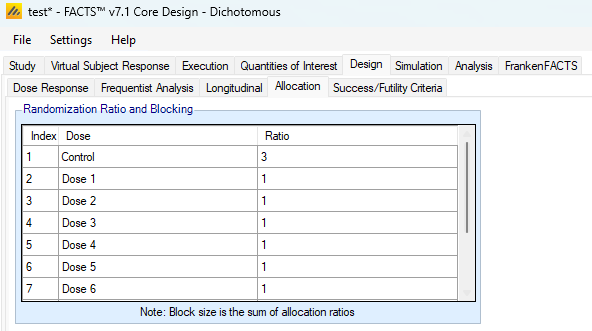
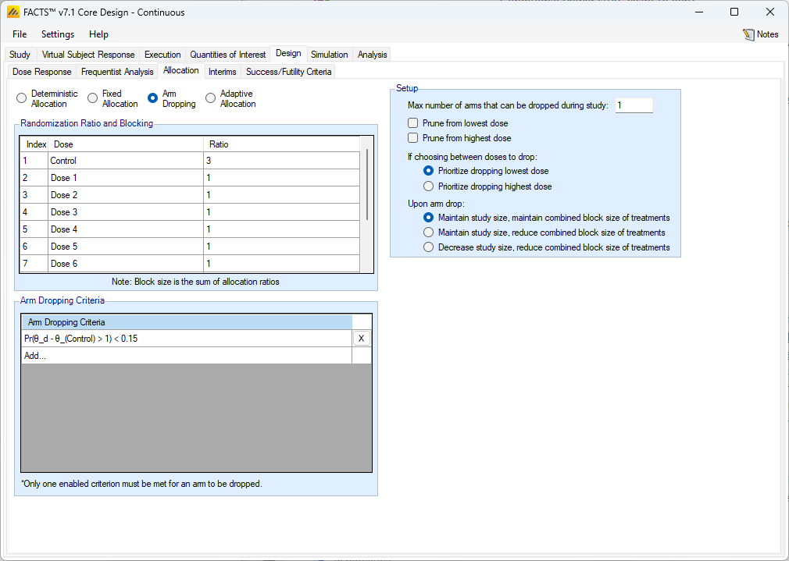
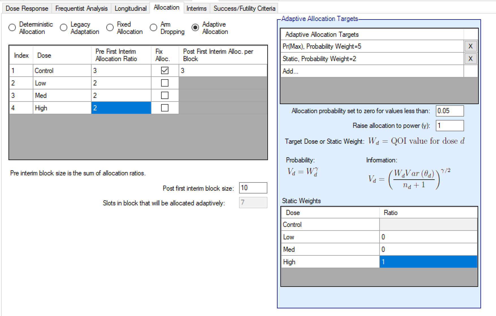
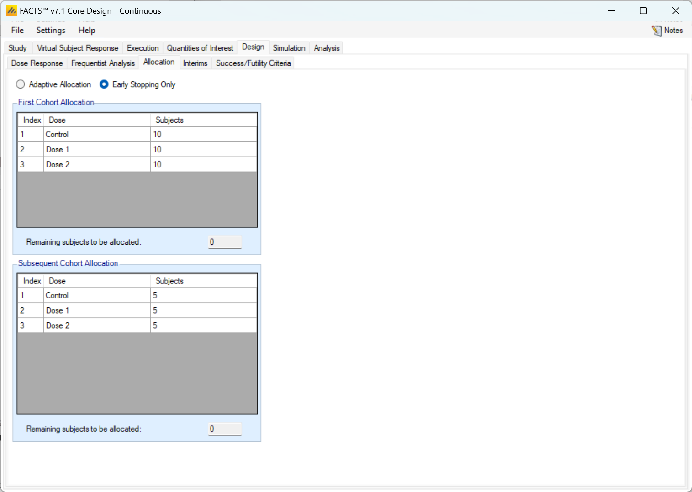
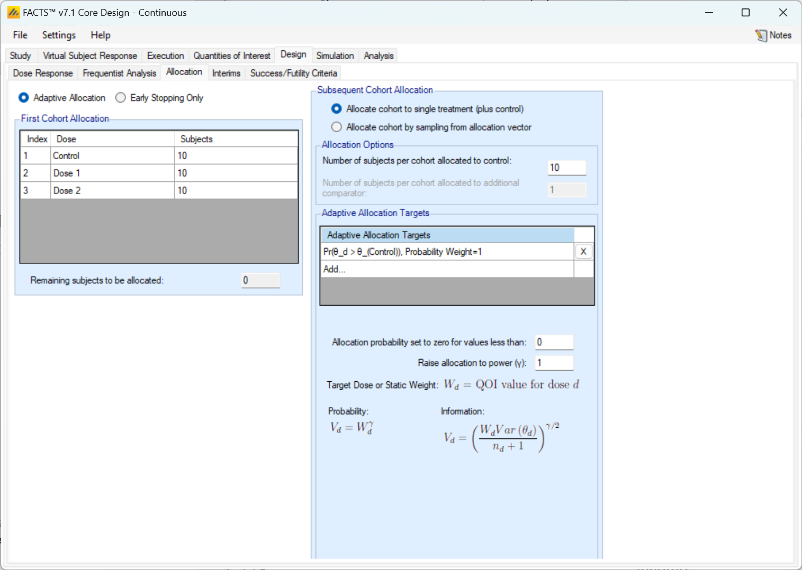

Allocation
Description of the Design > Allocation tab.
1 Allocation
The options on allocation tab depend on whether an adaptive or non-adaptive design has been selected on the ‘Study > Study Info’ tab, and if adaptive whether subjects are recruited sequentially or in cohorts.
If the design is non-adaptive then the only allocation option is blocked with fixed allocation ratios.
If the design is adaptive with Continuous or Deterministic recruitment, then there are 4 allocation options.
Fixed allocation – Subjects are randomized in blocks with fixed allocation ratios that do not change at interim analyses. This allocation strategy can still be useful in an adaptive design when paired with early stopping.
Arm dropping – which uses fixed allocation combined with the ability to drop under-performing treatment arms at any interim.
Adaptive Allocation - dose response adaptive allocation. At every interim the randomization probabilities are modified based on the specified adaptive allocation targets.
Deterministic Allocation – subjects are assigned treatments in an order specified in an external file that is imported into FACTS. This can be used to create a flexible randomization scheme in non-standard simulation scenarios.
If the design is adaptive with cohort recruitment then there are 3 allocation options, all of which can be combined with early stopping:
Fixed allocation – subjects are block allocated to treatments. The block distribution can be specified differently for the first cohort and the subsequent cohorts.
Adaptive Allocation - dose response adaptive allocation, in which at every interim the randomization probabilities are modified based on the provided adaptive allocation targets.
Adaptive Allocation – “best dose selection” after every interim the randomization for the next cohort is between the control and the dose that best meets the ‘target’ dose criteria.
1.1 Non-adaptive designs
If the design is non-adaptive, then on this tab the user simply specifies the fixed allocation ratio to use between all the treatment arms for the duration of the study. The allocation is implemented using a blocking scheme – the block size is the sum of the allocation ratios entered and each arm is given the number of slots in the block corresponding to its allocation ratio. Consequently, the values entered must be integers.

1.2 Fixed Allocation
If allocation is to be fixed, then on this tab the fixed allocation ratios and block size are specified. For each arm in the study allocation ratios are entered as for fixed designs, and allocation uses a block size that is the sum of the ratios. Fixed allocation works identically to the non-adaptive design randomization. The difference is that this Fixed allocation can be performed concurrently with interim analyses being performed.

1.3 Arm Dropping
Adaptive arm dropping trials allow accruing data to inform the adaptive design that an arm, or a set of arms, can be dropped, meaning they no longer have subjects randomized to them. FACTS Core supports designs in which some number of arms that are clearly ineffective can be dropped. Designs where at an interim one or more arms are selected to be continued and all other arms are dropped can be simulated using FACTS Staged Designs.

1.3.1 Randomization Ratio and Blocking
In the Randomization Ratio and Blocking section of the Allocation tab the user inputs the components of randomization blocks that enroll from the onset of the study and until any arm is dropped. These blocks work like the Fixed Allocation tab blocks.
Once an arm is dropped the “Upon arm drop:” option in the Setup section of the allocation tab will determine how randomization proceeds.
1.3.2 Arm Dropping Criteria
The user may select any combination of Bayesian “Per Dose” QOIs: Posterior Probabilities or Predictive Probabilities, or a Target Dose QOI. For each criteria selected (at least one must be selected), the user supplies a direction of comparison and probability threshold. If at any interim, any arm meets the specified arm dropping criteria, then that arm becomes a candidate for dropping. After all candidates are identified for dropping, the Setup rules determine which, if any, of the candidates will be dropped.
1.3.3 Setup
A variety of rules are specified in the Setup section of the Allocation tab.
1.3.3.1 Max number of arms that can be dropped during the study
The maximum number of arms that can be dropped – this can be set to from 0 to the number of active arms, the Control and Active Comparator are never dropped. This figure is the ‘maximum number of arms that can be dropped over the duration of the trial’. At any interim any number between 0 and the ’maximum number of arms can be dropped as long as this limit is not exceeded on the overall number of arms that would have been dropped.
If the maximum number of arms that can be dropped is set to the number of study drug arms, then if all arms are dropped this is recorded as an “early termination for futility”.
1.3.3.2 Prune from lowest/highest dose
Arm dropping can be restricted to ‘pruning from the lowest dose’ and/or ‘pruning from the highest dose’. If ‘prune from the lowest dose’ is selected, then until the lowest dose meets the arm dropping criteria the second lowest dose cannot be dropped and so on. At an interim when the lowest dose does meet the arm dropping criteria, and the second dose does too, then the second dose can be dropped as well (and third and fourth …), it does not have to wait until the next interim. Pruning from the highest dose does the same thing, except that no dose can be dropped unless every larger dose will also be dropped.
If no pruning is selected or pruning from both ends is selected, then the user must select to prioritize the higher or lower dose to cover the instance when more doses are candidates for dropping than are allowed to drop by the maximum threshold. If “Prioritize dropping the lowest dose” is selected then when forced to choose between two or more doses to drop, the one with the lowest effective dose strength will be dropped.
1.3.3.3 Upon arm drop
Finally, specify what is to be done with the unused subjects that would have been allocated to an arm that has now been dropped. There are three options:
- Maintain study size, maintain combined block size of treatments
- Subjects that would have been allocated to arms that have been dropped are now randomized between all the remaining active treatment arms (excluding control and active comparator) using their original allocation ratios. For example, if the allocation ratio was 2:1:1:1 between Control and D1, D2 and D3, then after dropping D1 the block size remains size 5 (2 to Control and 1 to each of D2 and D3) with the \(5^{th}\) slot being allocated 1:1 between the remaining two study arms D2 & D3. Thus, the overall proportion of subjects on Control (and Active Comparator) is maintained.
- Maintain study size, reduce combined block size of treatments
- Subjects that would have been allocated to any arms that have been dropped are randomized between all remaining arms (including control) using a reduced total block size. Thus, if the allocation ratio was 2:1:1 between Control and D1 and D2, then after dropping D1 the block size drops to total size three: 2 to Control and 1 to D2.
- Decrease the study size, reduce combined block size of treatments
- Subjects that would have been allocated to any arms that have been dropped are no longer recruited, and the total sample size of the study is reduced; the remaining subjects are recruited using a reduced block. If interims are specified by number of subjects recruited, these interim sizes are reduced proportionally. As an example of this, if an arm that gets 20% of the randomization is dropped when there are 100 subjects enrolled, then if the next interim is scheduled at 200 subjects enrolled, it will actually be performed at 180 subjects enrolled.
1.4 Adaptive Allocation
In adaptive allocation, the relative probabilities of assigning each of the doses to a subject may change throughout the trial. The adaptive allocation method that FACTS supports is one in which the allocation ratio is modified at each interim to increase the allocation to doses that have the preferred characteristics.
An adaptive allocation design has two phases: the “burn-in” before any adaptation takes place and the “adaptive phase”. The burn-in lasts until the first interim occurs, which is defined on the Interims tab. The adaptive phase lasts until the early stopping criteria are met or the maximum sample size is reached.

The table on the left hand side of the Adaptive Allocation tab allows for the specification of the allocation ratio during the burn-in period in the “Pre First Interim Allocation Ratio” column. The randomization during the burn-in period works exactly like Fixed Allocation with the provided randomization block. de When the first interim analysis is reached the allocation strategy changes from fixed to adaptive, and the “Pre First Interim Allocation Ratio” column is ignored. When randomizing adaptively the total block size is specified below the table in the “Post first interim block size:” entry. The “Fix Alloc.” column check boxes should be checked for any dose that should not be adaptively randomized to, but should get a fixed proportion of the randomization block. When an arm is checked for having a fixed allocation its block contribution within the total block size must be specified. The sum of the fixed allocations must be smaller than the “Post first interim block size.”
The slots that are in the block, but are not allocated to a fixed treatment are probabilistically assigned to one of the non-fixed treatments.
If the Control arm is not given a fixed allocation, it is allocated to with an adaptive probability that is equal to the treatment arm with the highest weight.
1.4.0.1 Adaptive Allocation Targets
Adaptive allocation probabilities can be driven by any combination of posterior probabilities, predictive probabilities, conditional powers, and target probability QOIs. The allocation ratio of each arm is a proportional to a function of the QOIs - simply, arms with higher QOIs have higher allocation probabilities.
The way that the allocation probabilities are calculated is as follows.
Suppose that \(M\) QOIs are specified in the “Adaptive Allocation Targets” table. Call them \(W^{(1)}, \ldots, W^{(M)}\), and to index the \(m^{th}\) QOI’s value for dose \(d\) we use the notation \(W_d^{(m)}\). Then, the first step in calculating the allocation weights is to convert the QOIs \(W\) to the allocation targets \(V\).
Any adaptive allocation QOI \(W_d^{(m)}\) that has “Weight For:” of Probability has an allocation target of \[V_d^{(m)} = \left(W_d^{(m)}\right)^\gamma,\] and if it has “Weight For:” of Information it has an allocation target of \[V_d^{(m)} = \left[ \sqrt{\frac{W_d^{(m)} \text{Var} \left( \theta_{d} \right)}{n_{d} + 1}} \right]^{\gamma}\] where \(\gamma\) is the value provided in “Raise allocation to power (\(\gamma\))” in FACTS, \(n_d\) is the number of subjects on enrolled on dose \(d\), and \(\text{Var}(\theta_d)\) is the variance of the dose-response model mean estimate for arm \(d\).
Then, when each dose has an allocation target \(V_d\) for each of the \(M\) QOIs, the allocation weights are combined in a linear combination to get the allocation weight. With \(M\) allocation targets and Relative Weights \(\omega_m\) provided when the allocation QOIs were specified: \[\Omega_d = \sum_{m=1}^M (\omega_m V_{d}^{(m)})\]
Once each dose has an allocation weight \(\Omega_d\), the set of \(\Omega\)’s is renormalized so that they add to they add to the proportion of slots in the block that will be allocated to adaptively. These renormalized values are the adaptive randomization probabilities. If, after renormalization, any of the doses have a randomization probability less than the value entered in “Allocation probability set to zero for values less than:”, then the dose with the lowest randomization probability is set to 0 and the other randomization probabilities are renormalized again to sum to the proportion of slots in the block that will be allocated to adaptively. This process iterates until all doses have randomization probabilities above the threshold or only one non-fixed dose is being randomized to.
1.4.1 Tips, Tricks, and Intuition
1.4.1.1 Weighting for Probability vs Information
When weighting for probability, the allocation target is derived simply from the value of the QOI. Weighting for probability is ‘more aggressive’ in adapting in pursuit of the target. The risk with a probability-based weighting is never allocating again to an arm where the initial data is so poor that its initial probability of being the target is so low it is never allocated to again. So, it is appropriate when the available sample size is small (and risks must be taken), the number of study arms is small (so it is unlikely an arm will not be allocated to again), or the allocation during the burn-in is large and evenly distributed (so that having unrepresentative data is very unlikely).
When weighting for information, the allocation target uses the value of the QOI, but is adjusted by the current variance of the dose response estimate and the number of subjects already allocated to the dose – an estimate of the additional information that would result from adding one more subject to that arm. Weighing for information will tend to spread the allocation around the most likely target, reducing the risk of never learning that dose is better than its initial data. If a dose response model is being used, allocation to doses around the target dose will contribute to the accuracy of the estimate of response on the target dose, but compared to the probability weighting will tend to result in fewer subjects allocated to the actual target dose.
Whichever weighing rule is selected the adaptation can be further ‘sharpened’ or ‘softened’ by adjusting the power to which the allocation probability is raised. Setting the power to 0.5 will significantly soften the allocation, setting it to 2 will significantly sharpen it.
1.4.1.2 Fixed Allocation Target
Any Bayesian “Per Dose” QOI, or “Target Dose” QOI can be used to determine the adaptive allocation weights. In addition there is the option to use a static weighting – this is of course not adaptive! What it does do is allow an adaptive allocation to be combined with a “guaranteed minimum allocation” (see example discussion below). If a Static target is included, a small table is displayed the specification of the ratio of the division of the static weight between the study arms that are being adaptively allocated to.
1.4.1.3 Non-fixed Control Adaptive Allocation
If the control allocation ratio is not fixed when performing adaptive allocation, then the control arm gets a randomization ratio that targets matching the number of control subjects to the active arm with the most subjects.
To derive the control allocation rate, let \(V_d\) for \(d=1, 2, \ldots, D\) be the allocation probabilities for each of the \(D\) non-control dose arms (these may be obtained by calculating based on the probability or information criteria as described above or the fixed allocation proportion with respect to the block size), and let \(n_d\) for \(d=1, 2, \ldots, D\) be the number of subjects allocated to those arms.
Then, the allocation target for the control arm \(V_0\) is:
\[V_{0} = \min\left\{\sum_{d = 1}^{D}{V_{d}\frac{(n_{d} + 1)}{(n_{0} + 1)}, \;\; \text{max} \{V_{1},V_{2},\ldots,\\V_{D}\} \right\}\]
Following fixing this control rate, the allocation probabilities for the non-fixed doses are renormalized to add up to the total non-fixed probability.
1.4.1.4 Zero Out Allocation Probabilities
If, at the end of the adaptive allocation probability calculation, any adaptively allocated arms have a randomization probability smaller than the value provided for “Allocation probability set to zero for values less than:”, then the allocation probabilities are adjusted.
To adjust the probabilities, first the arm with the smallest randomization probability is given a fixed allocation rate of 0. Then, the remaining adaptively allocated arms have their allocation probabilities re-normalized to sum to the probability remaining after all fixed doses have been allocated. Then, if any doses remain below the zero-out threshold, then this process is repeated. Continue the repetition as necessary. If none of the allocation probabilities are below the threshold, then the allocation probabilities are set.
If all non-fixed doses drop due to being below the threshold, then the probability is reallocated to the fixed doses. This can only happen if the fixed doses take up a large enough proportion of the slots in the block.
1.4.2 Adaptive Allocation Calculation Examples
1.4.2.1 Simple Response Adaptive Randomization Example
Suppose you have a control and 3 active doses. The control arm is fixed to randomize \(3/10\) slots in every block and a fixed 20% probability must be placed on the first active dose (dose A). So, the control arm gets 30% of the total allocation probability and dose A gets 20% of the total allocation. Suppose the target QOIs \(V_d\) for the three active doses are 0.20, 0.20, and 0.60 and that we’re using probability weighting with weight 1 for all of them. The second two doses are the only doses with unknown randomization probabilities, so they split the amount of non-fixed allocation probability proportionally based on their \(V_d\).
The allocation probability of the second active dose is \[\left( 1 - (0.3 + 0.2) \right)*\left( \frac{0.2}{0.2 + 0.6} \right)\] and the allocation probability of the third active dose is \[\left( 1 - (0.3 + 0.2) \right)*\left( \frac{0.6}{0.2 + 0.6} \right)\]
Thus, the final allocation probabilities for the control and the three active doses are: (0.3, 0.2, 0.125, 0.375).
If any of the adaptively allocated probabilities are less than a user specified minimum (“Allocation probability set to zero for values less than….” in the GUI) then these probabilities would be set to zero and the resulting probability is reallocated among the non-fixed probability doses. If all non-fixed doses drop at this point, then the probability is reallocated to the fixed doses.
1.4.2.2 Using Static Weighting Example: Ensuring a minimum allocation to all arms
This example uses the static allocation QOI to allow adaptive randomization, but with a guaranteed minimum allocation of 10% to each of 5 study arms. Let us say that we want the adaptive allocation to be evenly divided between targeting an EDq and MED target.
As there are 5 study arms, allocating 10% each amounts to 50% of the total. Thus, we could specify weights of 1 to the MED target, 1 to the EDq target, and 2 to the Static target, so the Static target gets 50% of the total weighting.
However, this ignores the possible allocation to a Control arm. What we have achieved above either allocates 10% to each study arm if there is no Control arm, or if there is a Control arm, allocates 10% of the subjects allocated to the study arms, not 10% of the overall.
Let us say that in addition to the 5 study arms you have a Control that we want to have 20% allocation and we want each study arm to have at least 10% of the overall allocation. The simplest way to specify this is to set a “Post first interim block size” of 10 and that 2 slots are allocated to Control. This leave 8 slots to be allocated across the treatment arms. We don’t want to allocate 1 out of 10 slots in the block to each using fixed allocation, because that 10% is all they would get. We need to allow them to be allocated to adaptively and use the Static target to ensure they get a minimum of 10%. We can achieve this by giving the static allocation a weight of 5 and divide a weight of 3 between the MED and EDq targets, so they get a weight of 1.5 each. Then, set all of the “Static Weights” to be 1 (any non-zero value would work) for each active arm.
By doing this, the static allocation targets make up \(5\text{ arms }*\text{ weight of }5 = 25\) parts of the weighted average and the MED and EDq combine to make up \(5\text{ arms }*\text{ weight of }3 = 15\) parts. So, if an arm has an MED of 0 and EDq of 0 it is still guaranteed to get at least \(\frac{5}{(25 + 15)}*(1 - 0.2) = 0.1\) of the total randomization.
1.4.2.3 Using Static Weighting Example: Ensuring a minimum allocation to top dose
Imagine an early Phase II Proof-of-Concept study that wants to compare 3 doses of the study drug (low, medium and high) to Control, and adaptively allocates to the dose with the maximum response. The study team also wish to ensure a minimum allocation to the top dose as they have a strong prior that it will have the maximum effect. They want to minimize the risk that the adaptive allocation avoids the top dose because of randomly poor results on that dose early on in the trial.
The optimal allocation to control in a multi armed study is approximately \(\sqrt{N}:1:1:\ldots\) where N is the number of study arms and in \(\sqrt{3}:1:1:1\) the proportion on control would be 37%. Here we’ve rounded down to 30% rather than up to 40% to reflect a typical clinical teams desire to get more data on their study drug than Control.
After the first interim, we specify allocation to be in blocks of 10 with the Control allocated to 3 slots in each block, the “Relative Weight:” on the Static target is 2 and the “Relative Weight:” on the Pr(Max) target is 5. So 50% of the allocation is adaptive targeting the dose with the Maximum response and 20% is fixed and allocated to the top dose by specifying that the static weighting “Ratio” is split 0:0:1 in the “Static Weights” table.

1.5 Deterministic Allocation
The deterministic allocation option allows for the treatment assignments of subjects accrued into the simulated trials to be assigned without randomness based on an uploaded file. The file providing the assignments should be a comma separated .dat file with 2 columns, but no column labels.
The first column should be an increasing, unique column of numbers from 1 to at least the maximum number of subjects that can be enrolled in the study. The second column should be the set of treatment assignments in order from 1 to the number of patient IDs. The treatment assignments are used in row order – they do not use the subject ID order. So, the first subject accrued in the study is given the assignment indicated by the first row, second column value, the second subject accrued in the study is given the assignment indicated by the second row, second column value, and so on.
The treatment assignments column in the .dat file should always have a minimum value of 1 and a maximum of the number of total arms in the study. If there is a control arm in the study, then treatment assignment 1 corresponds to a control arm randomization. If there is no control arm in the study, then treatment assignment 1 in the .dat file corresponds to a subject randomized to the lowest active dose.

1.6 Cohort recruitment – fixed allocation
If allocation is to be fixed the “Early Stopping Only” option should be selected. Then on this tab the fixed allocation ratios and block size are specified – for the first cohort and then for all subsequent cohorts. In each case the user specifies the number of each arm to allocate in each cohort and the sum must equal the size of the cohort.

1.7 Cohort recruitment – adaptive allocation
If allocation is to be adaptive the “Adaptive Allocation” option should be selected and then under “Subsequent Cohort Allocation” the “Allocate cohort by sampling from allocation vector” should be selected. Then on this tab
The fixed allocation ratios and block size are specified for the first cohort. The user specifies the number of each arm to allocate and the sum must equal the size of the cohort.
The user then specifies
The fixed allocation to control
The QOIs to be used to calculate the allocation ratios for the remaining subjects in the cohort as for adaptive allocation (see Adaptive Allocation above).
1.8 Cohort recruitment – allocate to best dose
If allocation is to be adaptive, but at each cohort just Control and the “best dose” are to be allocated to, the “Adaptive Allocation” option should be selected and then under “Subsequent Cohort Allocation” the “Allocate cohort to single treatment (plus control)” should be selected. Then on this tab
The fixed allocation ratios and block size are specified for the first cohort. The user specifies the number of each arm to allocate and the sum must equal the size of the cohort.
The user then specifies
The fixed allocation to control
The QOIs to be used to calculate the allocation weighting to calculate for the non-Control arms, (see Adaptive Allocation above) and all the subjects not allocated to control will be allocated to this arm.
